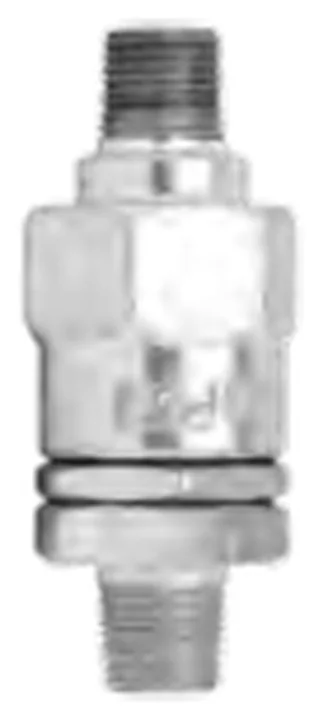

GROZ · Greasing Equipment
Grease Swivels High Pressure
CAT NR HFC/S/1-4F/1-4M/B · ORD NR 43800
| CAT NR (catalogue number) | HFC/S/1-4F/1-4M/B |
|---|---|
| ORD NR (order number) | 43800 |
| Box quantity | 100 |
| Thread specification | 1/4" BSPT (F) 1/4" BSPT (M) |
| Table section | STRAIGHT SWIVELS |
Open in the catalogue The catalogue PDF, page 113
From the GROZ Fluid Handling CC-07 catalogue. Not yet verified: these details were read from the printed catalogue automatically; check the catalogue page before ordering.